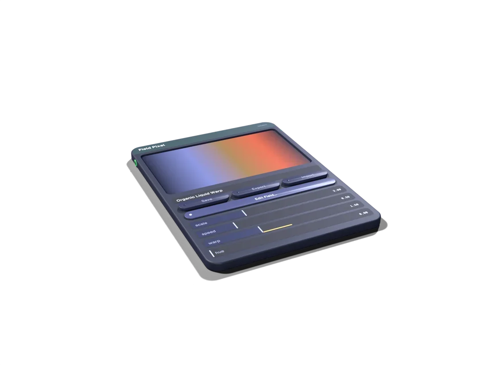

The Field Language Manual
Everything you need to write real Field kernels and build custom devices across graph, frame, element, pixel, and sample domains.

What Field is #
Everything you need to write real Field kernels and build real devices: the domains, the syntax, the declarations, and the six node types that host them. Every code example is self-contained Field code you can paste into the matching Field node.
1. What Field is, and why it exists #
Infinite is a node-based audiovisual workstation: you build patches by wiring boxes together on a canvas. Most boxes do one fixed thing. Field is different. It is a small text language that lets you write what a box does, instead of picking from a menu.
The one idea underneath all of Field is the kernel: a short body of code run once per element of some domain, automatically, forever. Write col = vec3(uv.x, uv.y, 0.5) and it runs once per pixel, 60 times a second, on the GPU: a shader. Write P.y += sin(P.x * 4.0 + t) * 0.2 and it runs once per point in a mesh: a geometry deformer. Write out = in * 0.5 and it runs once per audio sample: a DSP effect. You never say where it runs; Field infers that from which identifiers your code touches.
Every example in this manual is valid, runnable Field code written against the six node types that ship in Infinite today. Chapter 13 covers the language additions that landed after v1.
2. The five domains #
A domain is "what counts as one element." Four of the five map to real Field node types. The fifth, frame, has no node of its own.
| Domain | Runs | Hosted by | Produces |
|---|---|---|---|
| graph | once, at edit time | Field Graph | mounts and wires other real Infinite nodes |
| frame | once per rendered frame (about 60 a second) | hoisted inside any of the other four, for shared values | one value shared across all elements that frame |
| element | once per point or vertex per frame | Field Modifier, Field Primitive | mesh or point-cloud geometry and per-point colour |
| pixel | once per pixel per frame, on the GPU | Field Pixel | a 2D texture |
| sample | once per audio sample per voice (48,000 a second) | Field Effect, Field Synth | an audio signal |
The domain lattice #
This is the shape that governs what can see what. element, pixel and sample are mutually incomparable peers: an element kernel cannot read a pixel or sample value directly, in either direction. The only way to move a value between them is up through frame and back down (Chapter 6).
graph
|
frame
/ | \
element pixel sampleWhich node hosts which domain #
- Element kernels live in the Field Modifier node (deforms geometry already on the canvas) or the Field Primitive node (generates points from nothing).
- Pixel kernels live in the Field Pixel node.
- Sample kernels live in the Field Effect node (an
inpin to process) or the Field Synth node (note-drivenfreqandgate, noinpin). - Graph kernels live in the Field Graph node.
See Chapter 9 for what each of the six nodes does.
3. Core syntax #
Field reads like a small C-family language. Here is everything that is not obvious from that alone.
Bare names, no sigil #
Every identifier, whether a reserved name like P, uv, in, out or your own param, state and attrib names, is written bare, exactly like a normal variable. Unlike Houdini VEX's @P style, Field has no sigil at all.
P.y += sin(P.x * 4.0 + t) * 0.2Types and swizzles #
The type keywords are float, int, bool, vec2, vec3, vec4. There is no string type inside a kernel body. Swizzles work like GLSL: .x .y .z .w and .r .g .b .a, one to four letters. The two letter sets do not mix in one swizzle (.xg is not valid; use .xy or .rg).
Operators, comments and broadcast #
- Arithmetic is
+ - * / %, comparison is< <= > >= == !=, boolean is&& || !, and^is exponentiation (a ^ bispow(a, b)), not XOR. There are no bitwise operators. //starts a line comment.- A scalar auto-broadcasts against a vector:
P += 0.1adds to every component, with novec3(0.1, 0.1, 0.1)needed.
Branching with if() #
if(cond, a, b) is a function: a ternary that always returns a value, not an if/else statement. In pixel kernels it lowers to a GLSL mix(), so both branches are evaluated on the GPU every time. In element and sample kernels (CPU, one path per element or voice) it is ordinary, cheap control flow.
hit = if(P.y > threshold, 1.0, 0.0)4. Declarations: attrib, param, state #
Three keywords cover everything a kernel needs to remember or expose: a per-element scratch value, a UI knob, and a value that reads back one cycle late.
attrib: a value that lives per element #
Declares a per-element scratch value, initialized once. Whatever you assign into it that frame is what the rest of the kernel body sees. Element domain only.
attrib float heat = 0
heat = (P.y + 1.0) * 0.5
Cd = vec3(heat, 0.2, 1.0 - heat)An element attribute ramp driving vertex colour.
param: a value that becomes a UI knob #
param <type> <name> = <default> [<lo>, <hi>] declares a real, modulatable knob. It shows up on the node's faceplate, can be dragged, automated and cabled to a modulator.
param float speed = 2.0 [0.1, 10.0]Punctuation: in pixel kernels every statement ends with a semicolon (param float speed = 2.0 [0.1, 10.0];). In element and sample kernels, statements are newline-terminated with no semicolon.
state: this frame reads last frame's value #
state float y = 0
y = y * 0.999 + in * 0.1
out = yA one-pole recursive smoother in the sample domain. state declares a cell read as its value from the previous evaluation; whatever you assign becomes what the next evaluation sees, which is why y = y * 0.999 + ... is legal and not an infinite loop. It is the only way to loop a value back inside a kernel. State survives hot-reload (editing the code does not reset an unrelated filter) and saves with the patch.
5. Reserved words per domain #
Each domain seeds identifiers that already mean something. Redeclaring one with attrib, param or state is a compile error, not a warning.
| Domain | Reserved names | Notes |
|---|---|---|
| element | P N Cd i count t dt age | i is the element index: pick another name for your own loop variable |
| pixel | uv col t dt frame age res aspect | never redeclare uv or col |
| sample | in out sr freq gate noteOn notePitch noteVel | freq and gate are the current voice's note frequency and note-on state |
| graph | (none) | a one-shot script; uses emit, connect, set, place instead (Chapter 8) |
pi is only available in a pure frame-domain expression. Inside element and pixel kernels, write out the numeric constant longhand: 3.14159265.
p = uv * 3.14159265;Nodal pattern coordinate scaling.
6. Domain transfer operators #
Since element, pixel and sample cannot see each other directly, Field gives you explicit operators to move data across, always by way of frame.
| Operator | Direction | How you write it |
|---|---|---|
| reduce | many (one domain) to one (frame) | reduce.rms(...), reduce.max(...), and so on |
| broadcast | one (frame) to many (any domain) | nothing: assign a frame-hoisted value and it broadcasts automatically |
| map | one per element, within a domain | a language construct for per-element transforms |
| resample, downsample | rate-changing crossings | for the rarer case where you need a different rate, not just a different domain |
Domain transfer examples #
// element domain: a per-element hit, reduced to one frame-rate value
hit = if(P.y > threshold, 1.0, 0.0)
output frame float chime = reduce.max(hit)A boundary sensor: a per-element crossing reduced to frame.
// sample domain: the audio buffer's RMS in a band, reduced to one value
output frame float bass = reduce.rms(in, 20.0, 160.0)Audio band energy reduced to frame.
reduce ships with sum, mean, rms, rmsBandLimited, min and max. Going the other direction needs no keyword: reading a param that is fed by a frame-rate value elsewhere broadcasts to every pixel, element or sample for free, because a param read is already a per-domain broadcast.
reduce is a frame-rate operator. It works from inside an element or sample kernel to collapse many values into one. It is not available inside a pixel kernel; an aggregate of pixel data has to arrive as a value computed elsewhere and passed in.
7. Randomness #
rand, noise and sh are pure functions of their arguments: same inputs, same output, always, so a kernel stays deterministic and re-runnable. There is no hidden global RNG state to seed or reset.
rand(min, max, speed, seed) #
Takes 0 to 4 arguments; fewer arguments fall back to sane defaults.
n = rand(0, 1, 2.0, 0)
P += N * (n - 0.5) * 0.2Normal displacement using smooth noise: 0 to 1, speed 2.0, seed 0.
noise and sh #
noise and sh follow the same pure-function pattern as rand, taking 0 to 4 arguments. Reach for rand first for most device work; use noise or sh when you want a smoother or shaped variant and want to compare results by ear or eye.
8. Building a device #
There are two ways to bundle Field kernels into something that behaves like one reusable device, rather than a single raw kernel box.
1. Single-node dynamic pins #
Any element, pixel or sample kernel can declare extra pins right in its code (up to 16 combined input and output pins per kernel):
output frame float glow = abs(sin(t * speed))This creates a real extra pin on the canvas node that can be wired with a cable, saves and loads with the patch, and survives undo. It is the cheapest way to add a second domain's worth of I/O to a device that is really one native node's behaviour.
What a declared output pin carries today: a fixed value of 0. For a value that genuinely reaches another node right now, read it off one of the node's built-in toggle outputs instead: rms on Field Effect and Field Synth, publish on Field Modifier and Field Primitive, or state on Field Pixel. Use a hand-declared output pin when you want the pin present and wired for later, and one of the three toggles when you need the value live today.
2. Field Graph bundle ("Instrument Mode") #
For a device needing more than one kernel body, a Field Graph node runs its code once, at edit time, using four functions to mount and wire real Infinite nodes for you:
emit("Type Name", k0, k1, ...) -> handle
connect(srcHandle, srcSlot, dstHandle, dstSlot)
set(handle, "paramName", value)
place(handle, x, y)Live params on the graph node's own knobs forward into the emitted nodes, and the bundle's texture and audio pins forward correctly out to the rest of your patch. Toggle Instrument Mode to collapse the bundle into one box, or Unpack to Canvas to show the emitted nodes separately and rewire them by hand.
9. Field node reference #
Field is exposed to the user as six node types, each hosting one domain's kernel. All six compile the same source-text grammar covered in Chapters 1 to 8; the only thing that changes is which reserved names are in scope and which backend the kernel is compiled to.
| Node | Domain | What it does |
|---|---|---|
| Field Modifier | element | Runs a per-vertex kernel over geometry already on the canvas, modifying P, N, uv, Cd and custom attributes. |
| Field Primitive | element | Generates procedural point geometry from scratch, with no input required, using a per-element kernel (Circle, Spiral, Grid Lattice, Fibonacci Sphere, Helix and Torus Knot presets as starting points). |
| Field Effect | sample | Runs a kernel once per audio sample, on the audio thread. in is the audio input pin, state declares per-voice memory, param exposes a knob, and reduce.rms(in, loHz, hiHz) publishes a band-limited RMS reading once per block. |
| Field Synth | sample | A polyphonic, note-driven synthesizer using the same sample-domain compiler as Field Effect, but with freq and gate in place of an in pin: a self-contained voice, no upstream audio required. |
| Field Pixel | pixel | Runs a kernel once per pixel, compiled to GLSL. uv, col and res are the reserved names; a state cell declared [wrap] plus an offset read like A(uv + d) supports feedback and stencils. |
| Field Graph | graph | Runs a kernel once, at edit time, to build part of the patch itself: emit, connect, set and place spawn and wire real Infinite nodes. See Chapter 8. |
Pick the node by domain first, then by role: element splits into modify (Field Modifier) and generate (Field Primitive); sample splits into process (Field Effect, has an in pin) and generate (Field Synth, note-driven). Pixel and graph each have one node.
!Field Modifier, element domain
!Field Primitive, element domain
These screenshots come from the app itself (scripts/screenshot_all_nodes.py), so they match the build this manual was made for. Field Graph is created from the Field Primitive's graph mode and has no spawn-menu entry of its own.
10. Device faceplate #
Every Field node has two views: a compact body on the canvas, and a separate editor window for the code.
- The compact node body shows the auto-generated param knobs, notice text and an "Edit Field..." button. No source code is visible here.
- The floating editor window, opened by "Edit Field...", is where you read and write the kernel's text, inspect compilation status and see a live preview.
What the faceplate gives you #
- Knob rows laid out on Infinite's standard grid, so a Field node's knobs look and behave like every other node's, even with a variable-length, user-authored param list.
- An inline preview in the compact body: a live texture thumbnail on Field Pixel, a live scope on Field Effect and Field Synth, and a mini-viewport on Field Modifier and Field Primitive.
- Device save, import and export controls inside the editor window, so you can manage device files without closing the code view.
11. Saving and sharing devices: .infdev #
Field devices save and load through a portable file format: plain JSON.
{
"format": "infdev",
"version": 1,
"meta": {
"name": "My Device",
"author": "you",
"description": "optional",
"domain": "element"
},
"device": {
"code": "param float amp = 0.8 [0.0, 3.0]\n...",
"params": { "amp": 0.8 },
"nodeSettings": { "maxElements": 65536, "generateCount": 64 }
}
}nodeSettings differs per domain: a Field Primitive device carries maxElements and, when it has no upstream input, generateCount.
Saving, loading, sharing #
- Use the Devices dropdown plus Save, Export and Import on the node body to save a device or load one someone sent you.
- Drag an
.infdevfile onto the matching node type to load it directly. - You can hand-author or hand-edit an
.infdevfile in a text editor. It is JSON with acodestring field, as long as that field stays valid Field for the domain declared inmeta.
12. Common mistakes and quick reference #
The wrong and right pairs a fresh session, human or AI, hits first.
| Wrong | Why | Right |
|---|---|---|
@P.y += 0.1 | Field has no sigil | P.y += 0.1 |
param int voices = 8 | param only accepts float | param float voices = 8.0 |
using i as your own loop variable in element | i is the reserved element index | use a different name, for example k |
col = vec3(uv.x, uv.y, 0.5) | pixel statements need a semicolon | col = vec3(uv.x, uv.y, 0.5); |
x = pi * 2.0 | pi only works in a frame expression | x = 3.14159265 * 2.0 |
n = rand(t, seed) | the real signature is rand(min, max, speed, seed) | n = rand(0, 1, 2.0, seed) |
| wiring a declared output pin expecting a live value | it carries a fixed 0 today | use the node's rms, publish or state toggle instead |
.xg swizzle | cannot mix xyzw and rgba letter sets | .xy or .rg, not mixed |
redeclaring P, uv, in, out | shadowing a reserved name is a compile error | pick a different name |
| expecting an element value inside a pixel kernel | element, pixel and sample cannot see each other directly | reduce to frame, then broadcast, explicitly |
Quick reference #
- Type keywords:
float int bool vec2 vec3 vec4 - Arithmetic:
+ - * / %and^for power. Comparison:< <= > >= == !=. Boolean:&& || !. Compound assign:+= -= *= /= - Swizzles:
.x .y .z .wor.r .g .b .a, one to four letters, not mixed - One-argument functions:
sin cos tan abs floor ceil round sign exp sqrt log fract length normalize - Two-argument functions:
min max mod fmod pow step distance dot cross atan2 - Three-argument functions:
clamp lerp mix smoothstep if - Zero to four arguments:
rand noise sh
| Domain | Reserved | Node(s) |
|---|---|---|
| element | P N Cd i count t dt age | Field Modifier, Field Primitive |
| pixel | uv col t dt frame age res aspect | Field Pixel |
| sample | in out sr freq gate noteOn notePitch noteVel | Field Effect, Field Synth |
| graph | none (uses emit, connect, set, place) | Field Graph |
13. What is new since v1 #
This manual describes Field v1 as shipped in v0.3.0 in Chapters 1 to 12. Six language additions landed after it. None of them changes how an existing kernel behaves; each one makes something writable that needed C++ before.
13.1 Offset reads of pixel state: A(uv + d) #
In a pixel kernel a state cell can be read at a coordinate, not only where the pixel is. Bare A is sugar for A(uv). This is what makes reaction-diffusion, advection and every flow effect writable as Field text.
state float A = 1 [wrap]; // default boundary is clamp
d = 1.0 / res; // one texel
lapA = A(uv + vec2(d.x, 0.0)) + A(uv - vec2(d.x, 0.0))
+ A(uv + vec2(0.0, d.y)) + A(uv - vec2(0.0, d.y)) - 4.0 * A;
first = 1.0 - step(0.5, age); // 1.0 on the first cook only| Boundary | Meaning |
|---|---|
| (default) clamp | reads past the edge repeat the edge texel |
[wrap] | the texture wraps around |
[border] | reads past the edge return the cell's declared initial value |
Offset reads of a frame, element or sample cell are refused: those cells have no spatial extent. A kernel with any offset read keeps its state in a 32-bit float bank; without one it stays 16-bit.
age is a reserved name in pixel and element: the number of cooks since the node's state was cleared. Use it for a one-shot seed (1.0 - step(0.5, age) is 1 on the first cook only). frame cannot do this, because it is the global cook counter and is already large when a node spawns.
13.2 Element neighbour reads: X.at(k) #
In an element kernel, X.at(k) reads element k's X, where X is P, N, uv, Cd, a declared attribute, or an element state cell.
a = P.at(i - 1)
b = P.at(i + 1)
localAvg = (a + b + P) * 0.3333333
dev = P - localAvg // how far this point sits from its neighboursThe read always sees the cook's input: the incoming mesh for an attribute, the previous cook's value for a state cell. It never sees a value written earlier in the same loop, so the result does not depend on element order. Indices clamp to [0, count-1], so element 0 asking for i - 1 sees itself. .at() on a param or frame value is refused (it holds one value for the whole mesh).
Element simulations must keep positions in state, not P, because P is refilled from the incoming mesh every cook. The Verlet Rope and Buckling Ribbon presets are written this way.
13.3 State tables: state float name[N] #
A bounded array in frame and sample kernels. name[k] reads, name[k] = v writes, and k is any expression, clamped to [0, N-1] (clamp, not wrap, not an error, the same rule as .at()).
state float buf[12000] = 0.0
state float wpos = 0.0
readVal = buf[(wpos - 4800.0 + 24000.0) % 12000.0]
buf[wpos % 12000.0] = in
wpos = (wpos + 1.0) % 12000.0 // a delay line built from a tableTables are not available in element or pixel. Their total size is capped at compile time, the same way delay()'s budget is, so an oversized table is a compile error rather than a silent truncation.
13.4 Declared audio and image inputs #
A Field Effect or Field Synth kernel can declare extra audio inputs. Each declaration creates a real, connectable audio pin on the node, one per name:
input sample audio sidechain
out = in * (1.0 - abs(sidechain)) // duck by the second inputOn Field Effect the declared inputs follow the native in pin; on Field Synth they follow notes and in. input sample float name is still collected but is not bound to a signal. In a Field Pixel kernel, input pixel image name reads the connected texture (previously it read black). One declared image input is wired; a second is rejected at compile time.
13.5 Note history in frame: noteOn, notePitch, noteVel #
| Name | Value |
|---|---|
noteOn | 1.0 only on the sample a note-on registers (an edge, unlike gate, which is held); 0.0 otherwise |
notePitch | frequency in Hz of the most recent note (same convention as freq); holds after note-off |
noteVel | velocity 0 to 1 of the most recent note; holds after note-off |
These are one shared snapshot per node, like in and sr, not per voice like freq and gate. They are reserved names everywhere (you cannot declare a param, state cell or assignment with them) but read as an inert 0.0 in any node without a note input.
state float env = 0.0
env = if(noteOn > 0.5, noteVel, env * 0.999) // jump to the velocity, then decay13.6 Field Notes: beat, noteNum, tick, deg, rand, note #
| Name | Value |
|---|---|
beat | the transport position in beats |
noteNum | MIDI note number of the incoming note (reads 0.0 with no note input) |
tick(div) | 1.0 for the one sample where the beat crosses a multiple of div (in beats, for example 1/16), else 0.0 |
deg(d) | MIDI note for scale degree d under the node's Root and Scale; degree 0 at root C is middle C (60) |
rand() | a random number from 0 to 1; only valid in a Field Notes node |
note(pitch, vel, len) | inside an if, sends a note out; len is in beats, 0 holds as long as the incoming note |
These names are reserved, so you cannot declare a param, state cell or assignment with them.
if (tick(1/8) > 0.5) {
note(deg(floor(rand() * 7)), 0.8, 1/8) // a random scale degree on every eighth
}13.7 Fixes that change what old kernels read #
reduce.<op>(x)over a plain element-domain local used to return 0.0 always; it now returns the real reduction of this cook's values.length,normalize,distance,dotandcrossnow work in element kernels (they read 0.0 before, solength(P)was zero for every vertex).resandaspectare no longer hoisted into the CPU prologue, where they evaluated to 0; a texel size such as1.0 / resis now correct.- Vector literals are no longer mistaken for scalars by the constant folder.
Presets added since v1 include Gray-Scott reaction-diffusion and a flow and advection pair (Pixel), Verlet Rope and Buckling Ribbon (Element), and the pixel illusion, nature and Field Effect and Synth libraries.
14. Patching Field #
The Field Patcher shows a Field program as boxes and wires. The code stays the program: every box you add, wire you draw or number you drag is written back into the node's code, compiled, and kept as one undo step. Open the code and the boxes side by side and either one can be edited.
Canvas: [Field Notes 1] [Field Primitive 2]
| |
v select one v
+-- Field Patcher -----------------------------------------------+
| ♪ Field Notes 1 | ✦ Field Primitive 2 | ◌ Scratch 1 | + | ⤢ |
| rail | box canvas | Code | Box |
| ● | [time]--->[*]--->[floor]--->[...] | step = floor(t*4) |
| ● | | ... |
| Field Primitive ✓ 9 boxes |
+----------------------------------------------------------------+14.1 Opening it #
| From | What happens |
|---|---|
| View > Field Patcher, the panel rail, or Shift+F | the panel docks at the bottom (or top) |
| Boxes on a Field Notes, Field Primitive or Field Modifier body | the panel opens on that node's page |
| selecting one of those nodes on the canvas | its page comes to the front, unless the front page is pinned |
| File > Template library > Field patches | a scratch page with that starter |
14.2 Pages #
One page per node. Right-click a page to pin it (it then stays in front whatever you select), close it, move it, or delete the node. A scratch page (+) belongs to no node yet. When it has an outlet, the footer offers ⤓ to place it as a node:
| The page has | It becomes |
|---|---|
| a play note box | Field Notes (with the publish output on if it also has a value or pulse outlet) |
| a position, normal or colour outlet | Field Primitive |
| only value or pulse outlets | Field Primitive in Value mode |
Scratch pages are saved with the patch.
14.3 Boxes #
The rail holds the ten families: sources, arithmetic, range, waves, logic, time and memory, random, geometry, music, inlets and outlets. Right-click the canvas, or drag a wire into empty space, to search every box by its name or Field word. Boxes the page's node cannot run are greyed out. Wire colours follow the kind: number, on/off, pulse, note, point, per-point. Pulse wires animate.
Anything the boxes cannot show stays a code box with its text intact, so no program is ever lost by opening it.
14.4 Value mode and publish #
value on Field Primitive turns it into a value source: no mesh, and its publish output carries the program's publish. Field Notes has the same publish scalar output toggle as the other Field nodes, so a melody page can also send a value or a pulse to any knob.
publish = 0 + (sin(t * 2) - -1) / (1 - -1) * (1 - 0) // Breathing light: 0..1, wire it to any knob14.5 When a program breaks #
A broken program never silences the node: it keeps playing its last good program and the footer shows the error. Fix it in the boxes or the code and it takes over again.